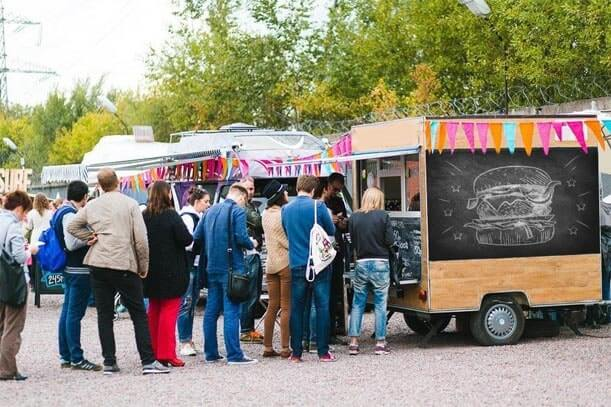
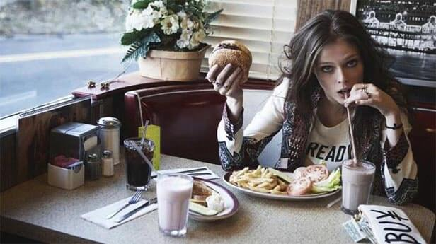
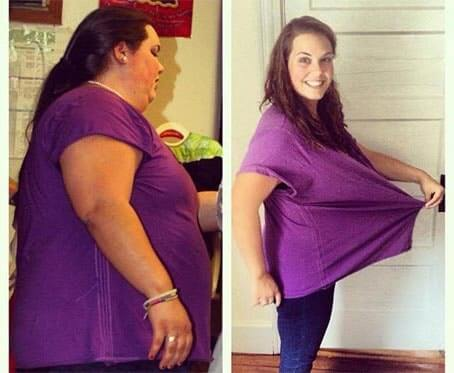
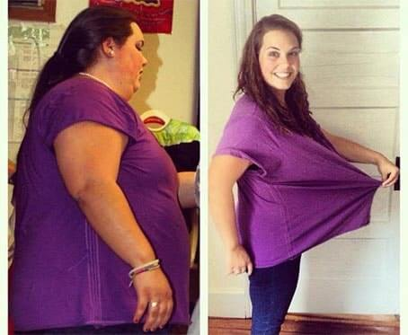

Sveiki visiem! Šeit ir Džimijs Kimmels.
Šodien mēs dzirdēsim stāstu, kas pārsteidz visos aspektos - par to, kā ātrās ēdināšanas īpašnieks piesaistīja apmeklētājus savam ēdienam ... zaudējot svaru!
Burgeri, picas un tā tālāk, pilnīgi visi ēda un zaudēja svaru, ieskaitot Maiku, kurš tur strādāja pāris gadus. Ēdot ārkārtīgi ātru ēdienu, Maiks zaudēja vairākus desmitus kilogramu, tāpat kā citi viesi ar lieko svaru. Viņi ēda un zaudēja svaru, un Viņu bija daudz. Kā tas notika, Maiks pats piekrita stāstīt tikai uz diktofona. Viņa stāsts ir no pirmavotiem.
Publicēts 2021
 Skandalozs stāsts
Skandalozs stāsts

Ātrās ēdināšanas noslēpums, no kura cilvēki zaudē svaru
Sveiki, visi, es esmu Maiks, un es tā izskatījos jau iepriekš. Trīs mēnešus strādājot ātrās ēdināšanas laikā, es zaudēju svaru. Es neskrēju, vairākas dienas smagi nestrādāju un nedevēju diētu. Es strādāju tieši tajos burgeros, kas liek jums zaudēt svaru. Nesen Es izstājos un vēlos cilvēkiem pateikt patiesību par slepeno sastāvdaļu, kuru mūsu šefpavārs izmantoja mērcē, lai cilvēki zaudētu svaru un atkal atgrieztos.

Kad mūsu pilsētā bija maz tūristu, tad arī ātrā ēdināšana nebija populāra. Tad sāka atvērties pirmie punkti ar virtuļiem un hotdogiem. Un izrādījās, ka tas bija izdevīgi. Tūristi dod priekšroku ātrai un neveselīgai pārtikai. Neviens nav atkarīgs no vārītas pārtikas. burkāni un Briseles kāposti, bet tik daudz kartupeļu, cik vēlaties. Kāpēc? Tāpēc, ka tie ir īpaši izveidoti šiem mērķiem.
Slepeno sastāvdaļu burgeri
Mans šefs agrāk strādāja restorānā un labi gatavoja ēdienus. Un viņš arī nolēma atvērt savu biznesu. Bet konkurence bija pārāk spēcīga, un viņa ēdieni nekļuva tik populāri, kā viņš gaidīja. Boss ņēma lielu kredītu par savu biznesu un izmēģināja dažādus veidi, kā atdzīvināt biznesu. Pusgadu viņš strādāja mīnusā, tikai tad cilvēki nāca pie viņa. Viņš pat pārtrauca tikt galā un paņēma mani kā palīgu.

Daudzi vietējie iedzīvotāji ir apsēsti ar veselību - sportam un pareizam uzturam. Un pēkšņi pie mums sāka nākt arvien vairāk klientu. Un straumē ienāca ne tikai resnie vīrieši, bet arī slaidie puiši un meitenes no fitnesa. Mūsu viedoklis kļuva populārs : Viņi par to raksta emuāros par ielu ēdienu, pievieno ceļvežiem un kartēm, kas piesaistīja tūristus.

Ielas ātrās ēdināšanas pakalpojumi ir kļuvuši populārāki nekā restorāns Michelin
Kāpēc pēkšņi radās šāda interese? Ātrā ēdināšana bija visizplatītākā. Frī kartupeļi, dažādi burgeri un limonādes - bez lielas mizas. Izņemot īpašo mērci. Viņa recepte tika glabāta stingrā konfidencialitātē. Šefpavārs gatavoja personīgi un neuzticējās nevienam. Es pats iekaroju. siera burgerim.
Ja es to neēdu no rīta, tad visu dienu bija noskaņojums un enerģija. Man bija bail, ka mērcei tika pievienots kaut kas aizliegts, lai cilvēki saķertos ar pārtiku. Bija arvien vairāk pastāvīgo klientu. Cilvēki atkal nāca pie mums. un atkal, jo visi ... zaudēja svaru. Tā ir taisnība.

Man bija 25 kg liekā svara. Trīs mēnešu darba laikā es tos visus zaudēju. Lai gan es ēdu gandrīz tikai hamburgerus un kartupeļus. Es tomēr atradu spēku un vēlmi sākt apmeklēt sporta zāli. Mūsu pastāvīgais klients-treneris pat deva es parakstīju abonementu un izstrādāju programmu mūsu burgeru atlaidēm. Tas bija dīvaini. Pārliecinieties paši, kā mūsu pastāvīgie klienti ir mainījušies pāris mēnešu laikā.


 

Es nobijos un aizvedu mērci uz laboratoriju analīzei. Un tas mani šokēja! Sastāvā nebija nekā aizliegta. Tikai dīvains garšvielu komplekts no dabīgām sastāvdaļām. Bet parastā garšviela nevarēja dot spēku, uzlabot gremošanu un palīdzēt zaudēt svaru. Es esmu nopietns. Paskaties, kā es izskatījos pirms ātrās ēdināšanas un tagad. Es ēdu darbā un sapratu, ka palieku slaidāka un izskatījos daudz labāk. Es biju apsēsta un par katru cenu nolēmu uzzināt, kāpēc cilvēki zaudē svaru. Bet es neko nevarēju atrast. Dārzeņus un gaļu no fermas atveda svaigus, un bulciņas cepa vietējais konditorejas veikals. Un tas mani tracināja. Otrais punkts atvērās. Rinda pie letes pat darbadienā stiepās pāri ielai, cenas pieauga, bet cilvēki nesamazinājās. Es jau sāku trakot idejas, kad pēkšņi man atklājās patiesība.

Kāpēc visi zaudē svaru burgeriem?
Kad priekšnieks nenodarbojās ar uzņēmējdarbību un riskēja zaudēt visu, ieskaitot ieķīlāto māju, viņš izdarīja izcilu soli. Viņš nāca klajā ar ātrās ēdināšanas recepti, kas liek cilvēkiem zaudēt svaru. Kā viņš to izdarīja? Nopirka populāru dabīgu produktu , kuru aktieri, dziedātāji, politiķi, ārsti, uztura speciālisti, modeļi utt. Dzer svara zaudēšanai un sāka to sajaukt mērcē. Un pazeminātas cenas. Ārprāts. Strādāja ar zaudējumiem un gaidīja cilvēku parādīšanos Viņi parādījās! Viņi sāka pirkt burgerus un notika "brīnums". Viņi ēda un zaudēja svaru.

Kā es to zināju? Nejauši ieraudzīju iesaiņojumu, pārbaudīju to iekšpusē un ārā, salīdzināju ar laboratorijas mērces analīzi. Un viss nostājās savās vietās. Es pavāram pateicu, ka zinu par sastāvdaļu, un lūdzu paaugstināt. Priekšnieks atteica, pamatojot, ka neviens man neticēs un ka man vajadzētu būt laimīgai

Es atmetu. Un tagad es gribu pateikt visiem, kas ēda novājēšanas burgerus. Jūs zaudējāt svaru, mērcei pievienojot . Jums vairs nav nepieciešams pārmaksāt un nogalināt kuņģis ar ātrās ēdināšanas palīdzību. Jūs pats varat viegli iegādāties produktu . Turklāt ražotājs bieži piedāvā atlaides un dāvanas pirkumam. viena blakusparādība - es gribu ēst mazāk. Es atceros savus iecienītākos klientus, kuri ieradās pēc burgera, bet nespēja to pabeigt un gandrīz noslāpēja. Tā kā viņi baidījās, ka, ja viņi neēdīs, viņi atkal kļūs labāki. Tagad es ceru, ka visi zinās patiesību - jūs varat zaudēt svaru, pievienojot “slepenu” sastāvdaļu pilnīgi jebkuram ēdienam!
Oho, tās ir ziņas.
Es dzirdēju kaut ko no sava brāļa par šiem burgeriem, bet es viņam neticēju.
Es pats esmu zaudējis svaru gaļas burgerī. Bet patiesība ir ļoti dārga un nav tik garšīga, kā es gribētu. Bet tagad es zinu noslēpumu un vienkārši nopērku sev un Es ēdīšu to, ko vēlos, un dabūšu sevi formā, par kuru vienmēr esmu sapņojis.
Un es domāju, ka jūs tagad izskatāties lieliski, jums vairs nav nepieciešams zaudēt svaru.
Kur nopirkt ? Ļoti steidzami!
Pērkot , nav problēmu, pasūtiet visu tieši no ražotāja.
Es esmu viens no pirmajiem, kurš iekaroja novājēšanas ātrās uzkodas. Es patiešām zaudēju tajā svaru un attīrīju savu ķermeni. Es pamanīju, ka mans garastāvoklis ir labāks, es labi gulēju un sāku vairāk kustēties. Es nevilcinājos un devos uz sporta zāli un atvēru spējas, par kurām man iepriekš nebija aizdomas. Tāpēc es sāku zaudēt svaru vēl ātrāk. Tad Maiks man to pateica mērcē . Tikai mazāk nekā nepieciešams. Es nopirku pats šo līdzekli un dzēru normālu kursu. Šeit ir mani gada rezultāti.
lielisks rezultāts!
jums vajadzētu izmēģināt arī šo rīku.
dabiski un efektīvi. Es esmu sajūsmā. Tas man patiešām palīdzēja! Es ne tikai zaudēju 20 kg, bet arī vēlējos nodarboties ar sportu. Es esmu tāda figūra, par kuru nekad iepriekš nebiju sapņojusi.